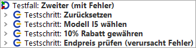
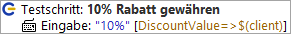
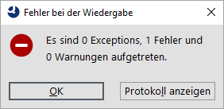

| Version 6.0.3 |
Der zweite Testfall wird uns zeigen, was passiert, wenn ein Fehler bei der Testausführung auftritt.
|
|  | ||
|
| Abbildung 19.9: Der "Zweite" Testfallknoten | ||
Bis auf den dritten Testschritt sieht es bekannt aus. Was tut der Unbekannte?
Testschritt: 10% Rabatt gewähren - Schreibt den Wert 10 in das Rabattfeld
Die Texteingabe ist eine weitere Basisaktion. Eingabe-Knoten kann man ebenfalls direkt über die Aufnahmefunktion generieren lassen. Den Wert 10 sieht man im Feld "Text" rechts und auch direkt im Text des Baumknotens.
|
|  | ||
|
| Abbildung 19.10: Die Details des zweiten Testfalls | ||
Wir wollen uns die Ausführung des zweiten Testfalls anschauen.
Diesmal erscheint ein Dialog mit der Information, dass ein Fehler aufgetreten ist.
|
|  | ||
|
| Abbildung 19.11: Fehler im zweiten Testfall | ||
Was ist passiert? Fast immer wenn so ein Fall auftritt, ist es sinnvoll das Protokoll zu Rate zu ziehen.
Alternativ könnte man den Testfall zur Fehlersuche nochmal im Debug-Modus ausführen. Diese Vorgehensweise wird in Kapitel Benutzen des Debuggers (Java) erläutert.
| Letzte Änderung: 6.9.2022 Copyright © 2002-2022 Quality First Software GmbH |